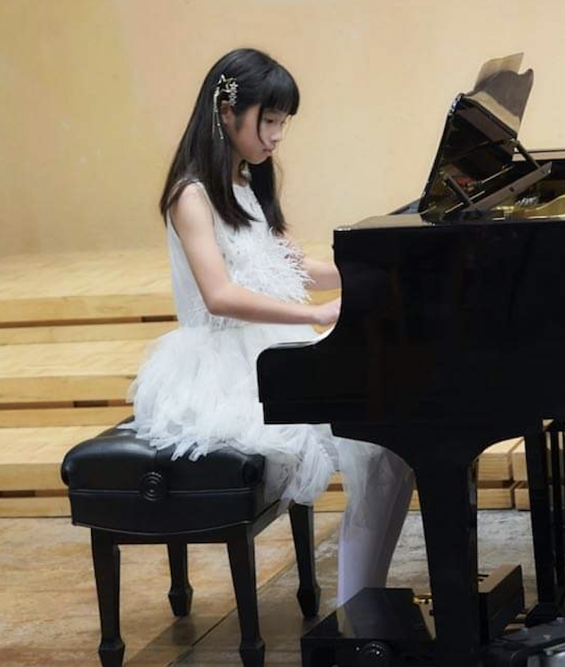
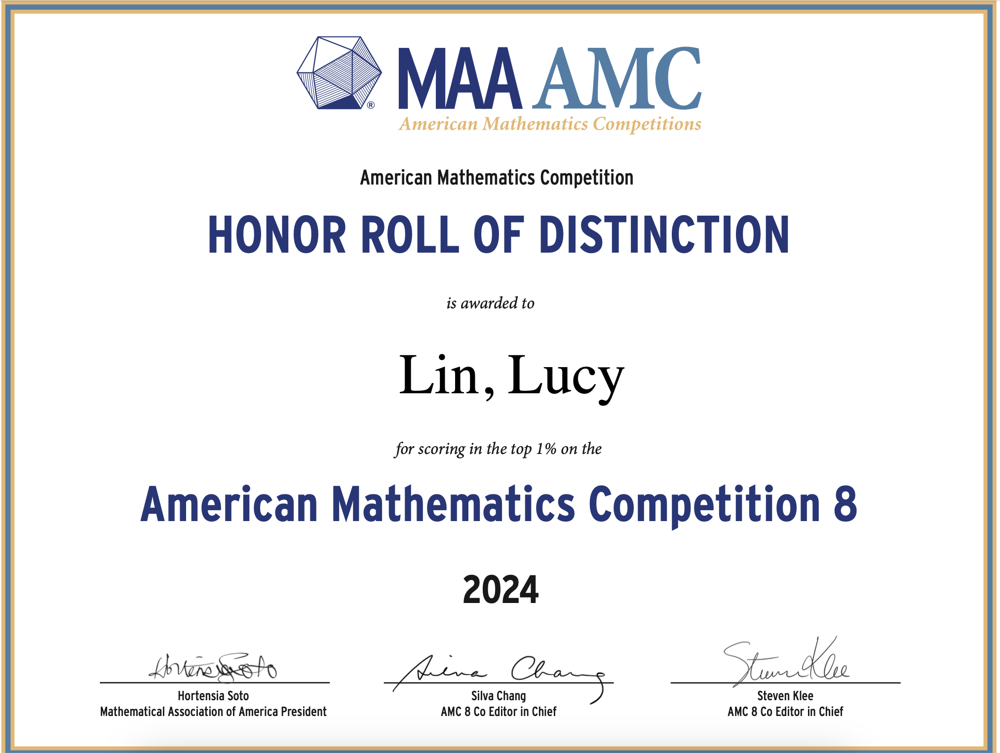
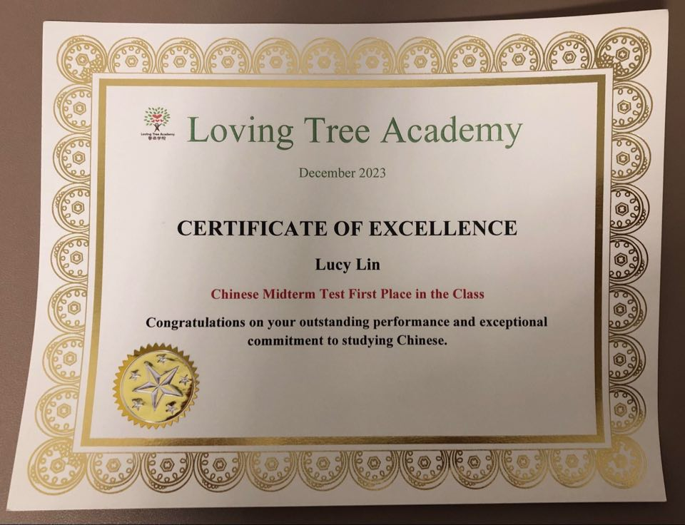

|  |
Lucy Lin6th Grade Student @ The Dorris-Eaton School |
Lucy is a 6th grade student at The Dorris-Eaton School, where she pursues a wide range of academic and extracurricular interests. She is especially passionate about computer science and mathematics, and also excels in dance and music. With a growing portfolio of achievements in national competitions, Lucy demonstrates both intellectual curiosity and artistic talent.
Achievements
| A1 |
American Mathematics Competitions (AMC10), 2025 Qualified for the American Invitational Mathematics Examination (AIME) |
| A2 |
American Mathematics Competitions (AMC8), 2025 Ranked in the Top 1% nationally |
| A3 |
California Writers Club - Young Writers Contest, 2025 Received Honorable Mention in the Young Writers Contest |
| A4 |
American Mathematics Competitions (AMC8), 2024 Scored 24 (out of 25). |
| A5 |
CogAT Test - Gifted and Talented Education (GATE) Exam, 2024 Passed CogAT Test - Gifted and Talented Education (GATE) Exam (scored 99) |
| A6 |
ABRSM Piano Exam ABRSM Piano Level 5 Distinction, 2024 ABRSM Music Theory Level 5 Distinction, 2024 ABRSM Piano Level 4 Distinction, 2022 ABRSM Piano Level 3 Distinction, 2021 |
| A9 |
International Piano Awards Won the gold place in the World Classical Music Awards, 2024 Won the unique interpretation special award in the World Classical Music Awards, 2024 Won the first place in the 2024 Los Angeles "Golden Classical Music Awards" Competition, 2024 |
| A7 |
National Talent Dance Competition Awarded 1st place champion in the group dance |
| A8 |
Chinese Competition Awarded 1st place in the Chinese competition held by the Loving Tree Academy |
| A10 |
International Competition in Mathematics (Math Kangaroo), 2022 Ranked national 4 in Math Kangaroo 2022 (over 6 million participants) |
Certificates
|  |

|

|

|

|
 |

|